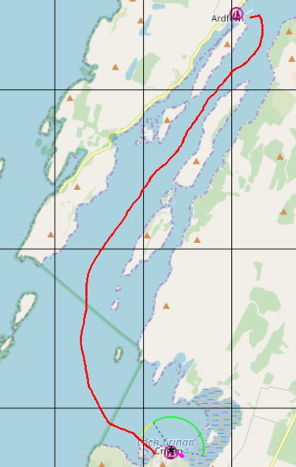
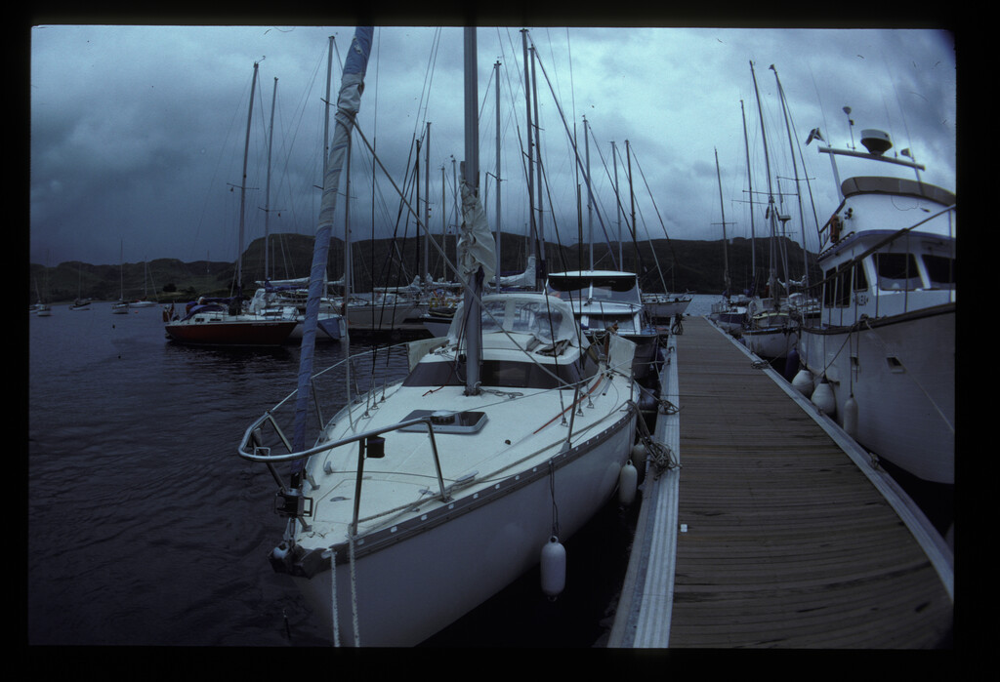
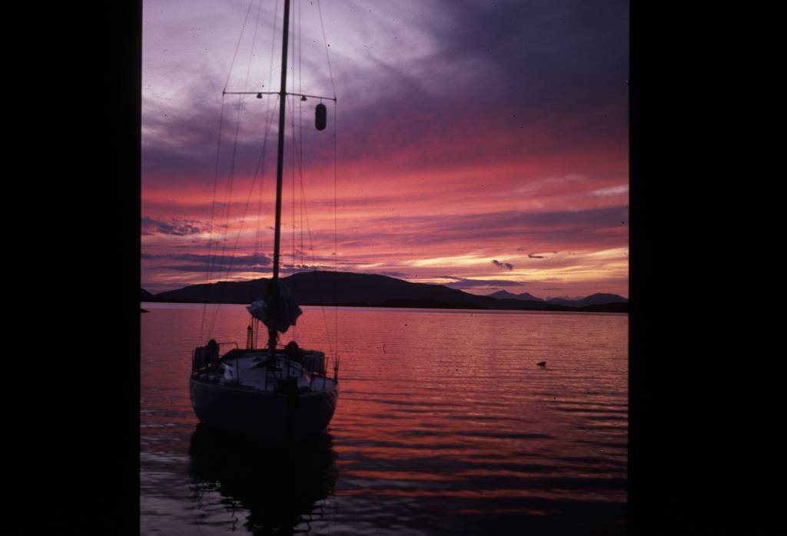
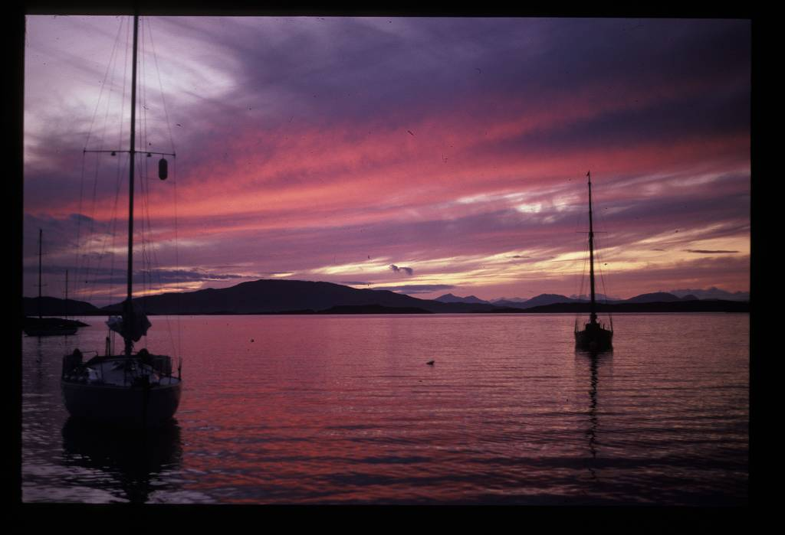
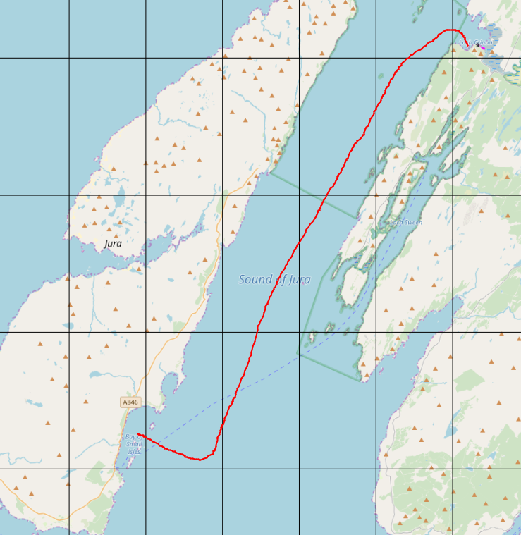
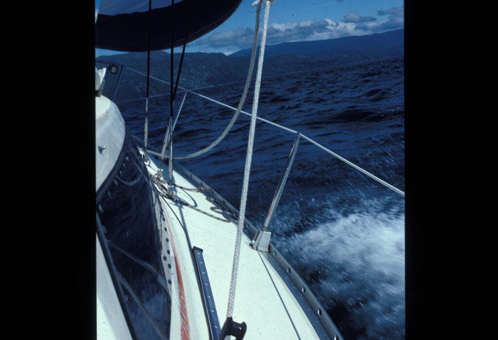
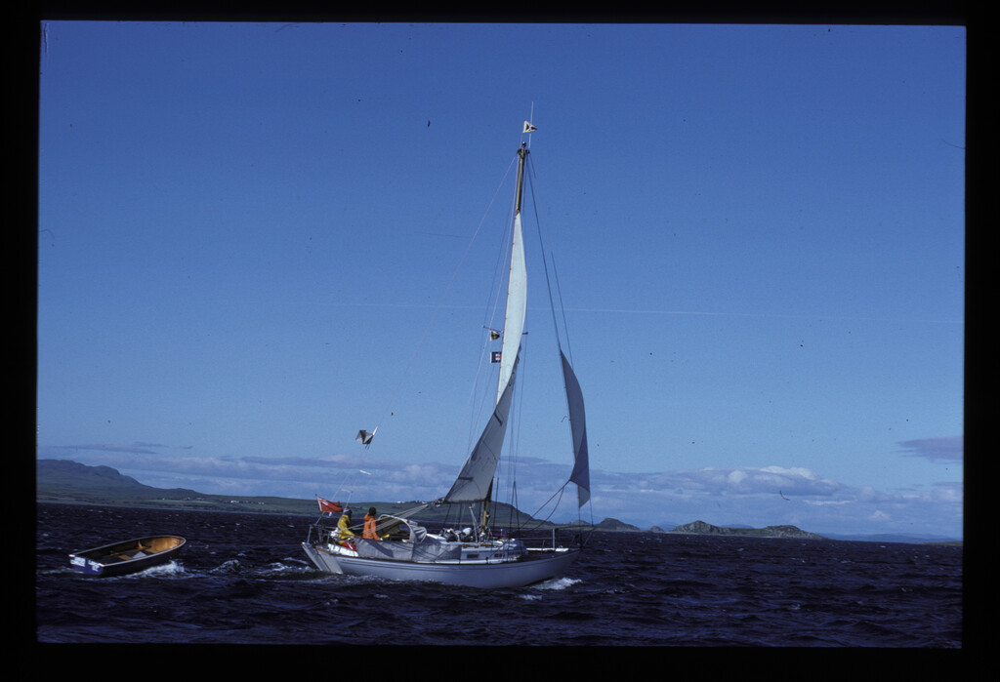
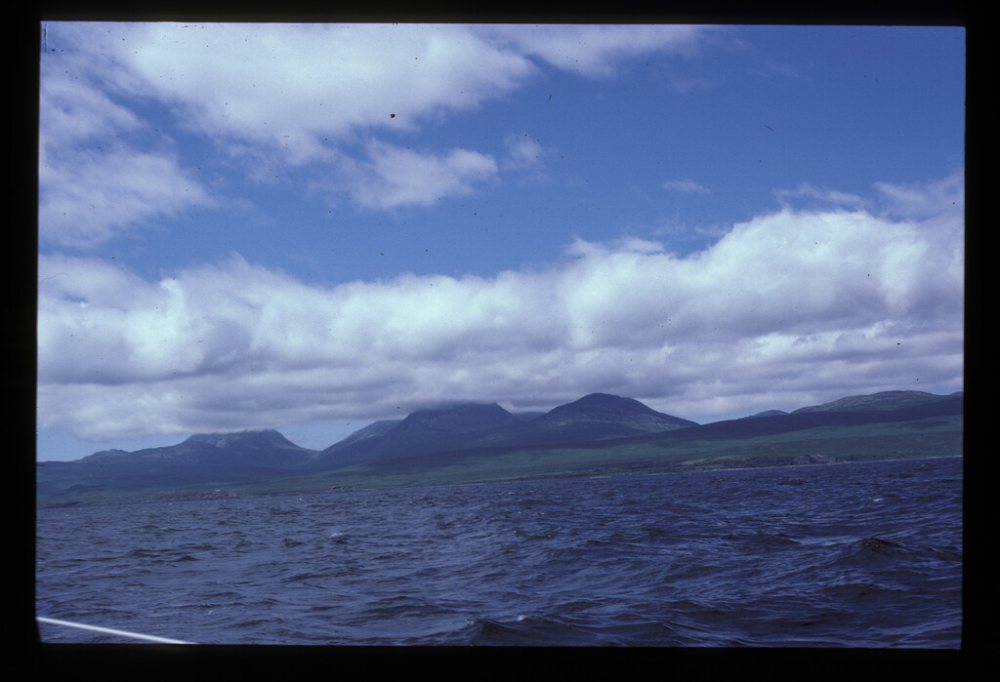
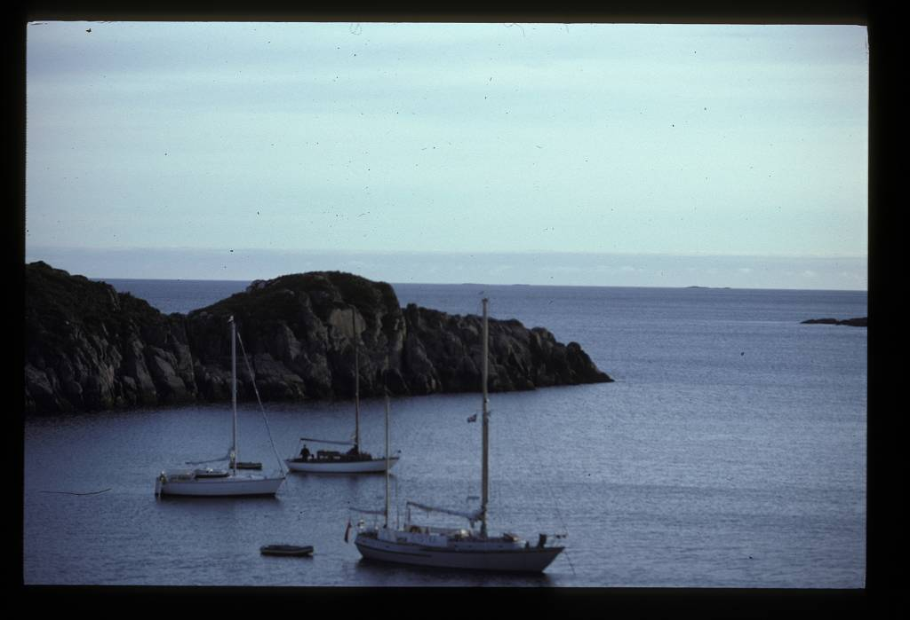
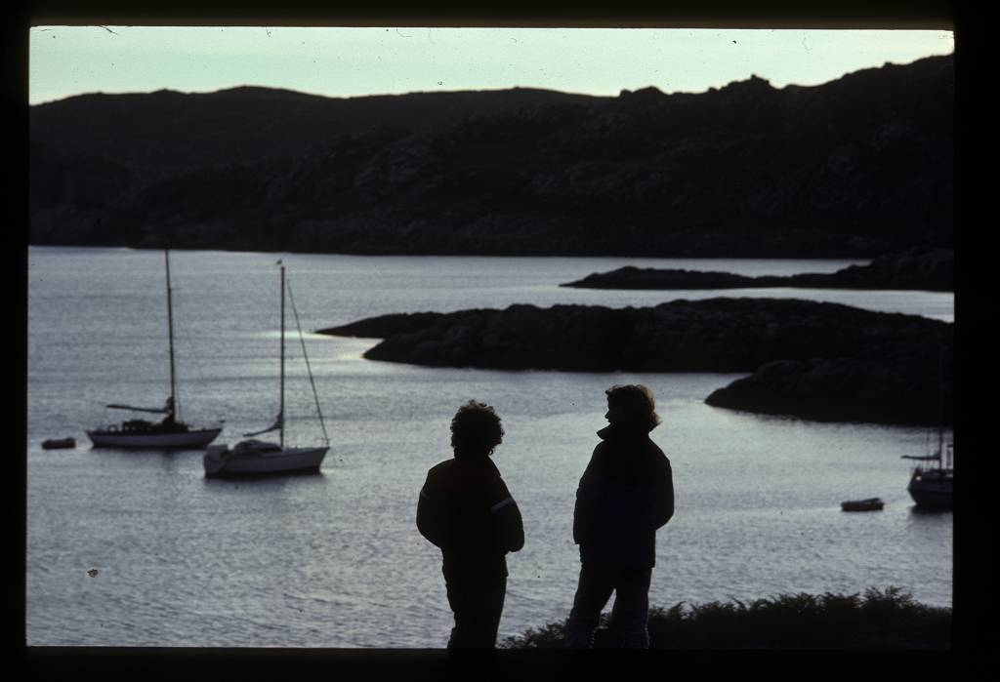

|  |
 |
| After sheltering in Adrfern on the
first night because a sage from Ardfern marina told us it was "stoorie" we sailed to to Crinan on day 2 with a glorious sunset that night. |
Boy david seeking shelter from the
storm. Doubtless we dined that night at the Galley of Lorne |
|  |  |
|  |
 |
| We woke to a breezy day. it made for
good sailing south to Craighouse Isle of Jura. |
|
|  |
 |
| The breeziness can be seen here. We watched them pick up their Highland and Islands buoy under sail ar Craighouse |
Paps of Jura. There had been a plan to climb them, but the following day was cloudy
|
|  |
||
| Ardnalanish bay,
Isle of Mull |
Anchored at Crinan
|
|
|  |